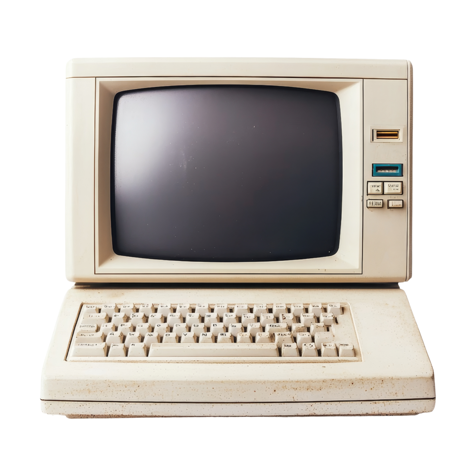
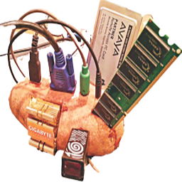

Standart
Ortalama ve iyi bilgisayarlar için.
Standart
Ortalama ve iyi bilgisayarlar için.

Düşük
Patates olmasa da kötü bilgisayarlar için.

Patates
Gerçekten patates bilgisayarlar için.
Standart
Ortalama ve iyi bilgisayarlar için.